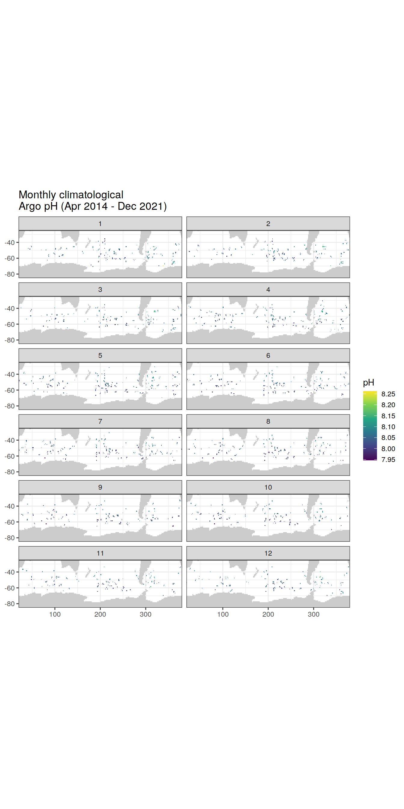
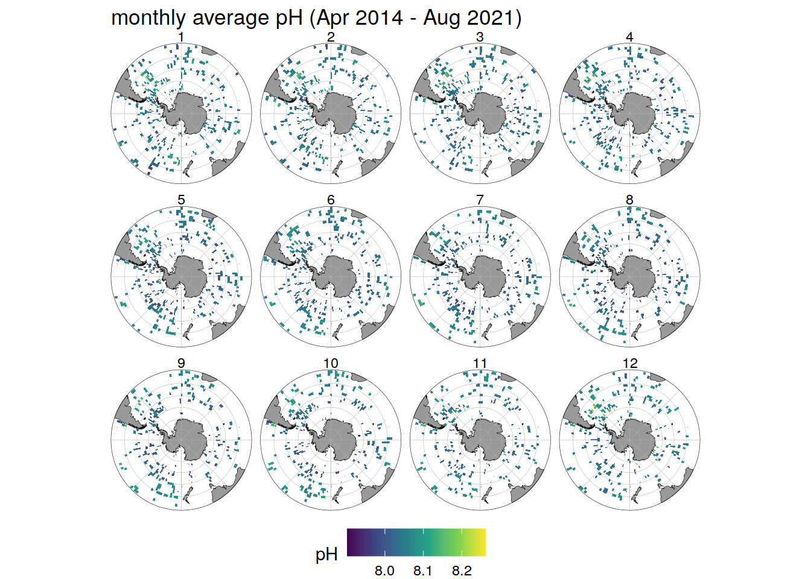
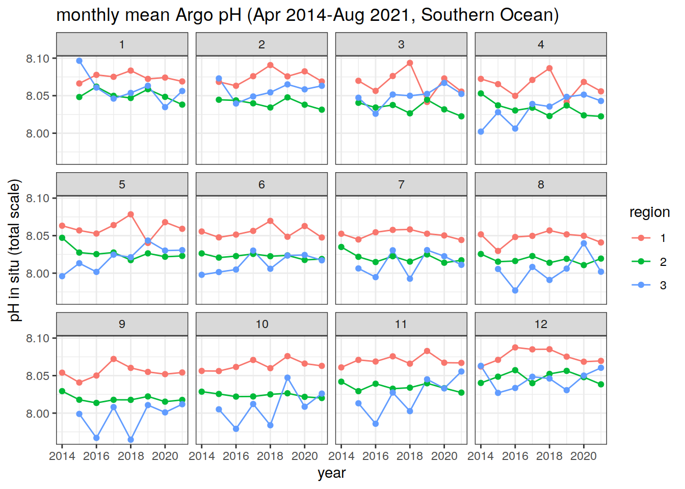
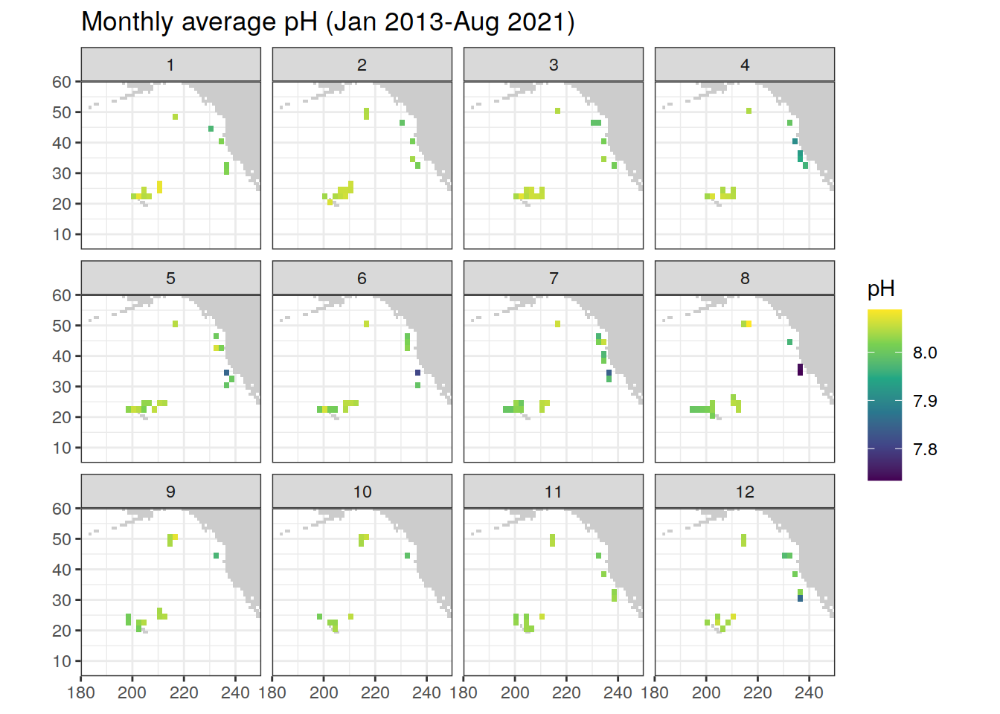
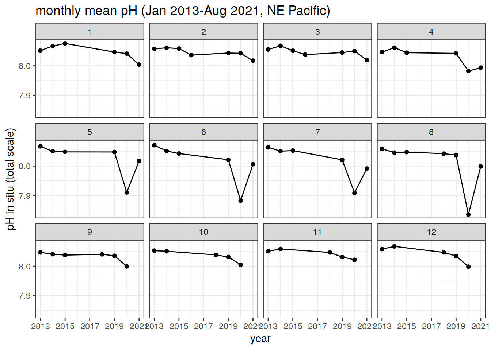
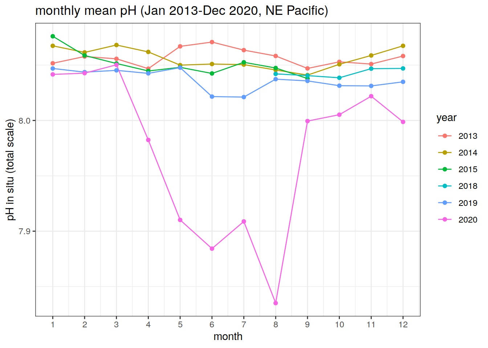

BGC-Argo pH Data
Pasqualina Vonlanthen & Jens Daniel Müller
19 November, 2021
Last updated: 2021-11-19
Checks: 7 0
Knit directory: bgc_argo_r_argodata/
This reproducible R Markdown analysis was created with workflowr (version 1.6.2). The Checks tab describes the reproducibility checks that were applied when the results were created. The Past versions tab lists the development history.
Great! Since the R Markdown file has been committed to the Git repository, you know the exact version of the code that produced these results.
Great job! The global environment was empty. Objects defined in the global environment can affect the analysis in your R Markdown file in unknown ways. For reproduciblity it’s best to always run the code in an empty environment.
The command set.seed(20211008) was run prior to running the code in the R Markdown file. Setting a seed ensures that any results that rely on randomness, e.g. subsampling or permutations, are reproducible.
Great job! Recording the operating system, R version, and package versions is critical for reproducibility.
Nice! There were no cached chunks for this analysis, so you can be confident that you successfully produced the results during this run.
Great job! Using relative paths to the files within your workflowr project makes it easier to run your code on other machines.
Great! You are using Git for version control. Tracking code development and connecting the code version to the results is critical for reproducibility.
The results in this page were generated with repository version 171aa37. See the Past versions tab to see a history of the changes made to the R Markdown and HTML files.
Note that you need to be careful to ensure that all relevant files for the analysis have been committed to Git prior to generating the results (you can use wflow_publish or wflow_git_commit). workflowr only checks the R Markdown file, but you know if there are other scripts or data files that it depends on. Below is the status of the Git repository when the results were generated:
Ignored files:
Ignored: .Rhistory
Ignored: .Rproj.user/
Ignored: output/
Untracked files:
Untracked: code/creating_dataframe.R
Untracked: code/creating_map.R
Untracked: code/pH_data_timeseries.R
Note that any generated files, e.g. HTML, png, CSS, etc., are not included in this status report because it is ok for generated content to have uncommitted changes.
These are the previous versions of the repository in which changes were made to the R Markdown (analysis/ph_data.Rmd) and HTML (docs/ph_data.html) files. If you’ve configured a remote Git repository (see ?wflow_git_remote), click on the hyperlinks in the table below to view the files as they were in that past version.
| File | Version | Author | Date | Message |
|---|---|---|---|---|
| Rmd | 171aa37 | pasqualina-vonlanthendinenna | 2021-11-19 | updated loading pH data and color palettes |
| Rmd | c696726 | pasqualina-vonlanthendinenna | 2021-11-17 | updated loading pH data and color palettes |
| html | 9824928 | pasqualina-vonlanthendinenna | 2021-11-16 | Build site. |
| Rmd | 383aa57 | pasqualina-vonlanthendinenna | 2021-11-16 | updated |
| html | b6a26a1 | pasqualina-vonlanthendinenna | 2021-11-16 | Build site. |
| Rmd | b473f72 | pasqualina-vonlanthendinenna | 2021-11-16 | added ggOceanMap for pH |
| html | 0dce554 | pasqualina-vonlanthendinenna | 2021-11-15 | Build site. |
| Rmd | 2c20367 | pasqualina-vonlanthendinenna | 2021-11-15 | added ggOceanMap for pH |
| html | 7a01367 | pasqualina-vonlanthendinenna | 2021-11-12 | Build site. |
| Rmd | 59073c1 | pasqualina-vonlanthendinenna | 2021-11-12 | added NE Pacific oxygen |
| html | 273ed2c | pasqualina-vonlanthendinenna | 2021-11-12 | Build site. |
| Rmd | 06b6be7 | pasqualina-vonlanthendinenna | 2021-11-12 | added NE Pacific oxygen |
| html | 284003d | pasqualina-vonlanthendinenna | 2021-11-11 | Build site. |
| Rmd | f7807db | pasqualina-vonlanthendinenna | 2021-11-11 | added oxygen data page |
| html | 6276d6c | pasqualina-vonlanthendinenna | 2021-11-11 | Build site. |
| Rmd | 8baed53 | pasqualina-vonlanthendinenna | 2021-11-11 | added pH data page |
Task
Explore BGC-Argo pH data through timeseries and monthly climatological maps
path_argo <- '/nfs/kryo/work/updata/bgc_argo_r_argodata'
path_emlr_utilities <- "/nfs/kryo/work/jenmueller/emlr_cant/utilities/files/"Load pH data
Load in delayed-mode adjusted pH data from the data files created in Loading Data
# keep only pH data and associated CTD variables
path_argo_preprocessed <- paste0(path_argo, "/preprocessed_bgc_data")
# load in surface pH data
ph_surface_2x2 <- read_rds(file = paste0(path_argo_preprocessed, '/ph_surface_2x2.rds'))
ph_surface_1x1 <- read_rds(file = paste0(path_argo_preprocessed, "/ph_surface_1x1.rds"))
# ph_merge <-
# read_rds(file = paste0(path_argo_preprocessed, "/bgc_merge.rds")) %>%
# select(
# -c(doxy_adjusted:nitrate_adjusted_error),
# -c(profile_doxy_qc, profile_nitrate_qc)
# )Southern Ocean surface pH
The focus here is on surface pH (in the top 20 m of the watercolumn), in the region south of 30ºS
# select pH data for the Southern Ocean, south of 30ºS
ph_surface_SO <- ph_surface_2x2 %>%
filter(lat <= -30)
# check the correct latitudes, QC flags, and depth levels have been filtered
# max(ph_surface$lat)
# min(ph_surface$lat)
# table(ph_surface$ph_in_situ_total_adjusted_qc)
# max(ph_surface$depth)
# min(ph_surface$date)
# max(ph_surface$date)Monthly climatological map
Create a climatological monthly map of surface pH, in a 2x2º longitude/latitude grid, for the region south of 30ºS (monthly pH averaged over April 2014-August 2021)
# average pH values in the top 20 m for each month in each 2 x 2º longitude/latitude grid
ph_mean_SO <- ph_surface_SO %>%
group_by(lat, lon, month) %>%
summarise(ph_ave_month = mean(ph_in_situ_total_adjusted))`summarise()` has grouped output by 'lat', 'lon'. You can override using the `.groups` argument.# read in the map from updata
map <-
read_rds(paste(path_emlr_utilities,
"map_landmask_WOA18.rds",
sep = ""))
# map a monthly climatology of pH (April 2014 - August 2021)
map +
geom_tile(data = ph_mean_SO,
aes(lon, lat, fill = ph_ave_month)) +
lims(y = c(-85, -25)) +
scale_fill_viridis_c() +
labs(x = 'lon',
y = 'lat',
fill = 'pH',
title = 'Monthly average pH (Apr 2014 - Aug 2021)') +
theme(legend.position = 'bottom') +
facet_wrap(~month)Warning: Raster pixels are placed at uneven vertical intervals and will be
shifted. Consider using geom_tile() instead.Warning: Removed 153708 rows containing missing values (geom_raster).
basemap(limits = -30, data = ph_mean_SO) + # change to polar projection
geom_spatial_tile(data = ph_mean_SO,
aes(x = lon,
y = lat,
fill = ph_ave_month),
linejoin = 'mitre',
col = 'transparent',
detail = 60)+
scale_fill_viridis_c()+
theme(legend.position = 'bottom')+
labs(x = 'lon',
y = 'lat',
fill = 'pH',
title = 'monthly average pH (Apr 2014 - Aug 2021)')+
facet_wrap(~month)Assuming `crs = 4326` in stat_spatial_rect()
Assuming `crs = 4326` in stat_spatial_rect()
Assuming `crs = 4326` in stat_spatial_rect()
Assuming `crs = 4326` in stat_spatial_rect()
Assuming `crs = 4326` in stat_spatial_rect()
Assuming `crs = 4326` in stat_spatial_rect()
Assuming `crs = 4326` in stat_spatial_rect()
Assuming `crs = 4326` in stat_spatial_rect()
Assuming `crs = 4326` in stat_spatial_rect()
Assuming `crs = 4326` in stat_spatial_rect()
Assuming `crs = 4326` in stat_spatial_rect()
Assuming `crs = 4326` in stat_spatial_rect()
Monthly timeseries
Plot timeseries of monthly pH values, averaged over the whole region south of 30ºS
# plot a timeseries of monthly values over the whole southern ocean south of 30ºS
ph_month_SO <- ph_surface_SO %>%
group_by(year, month) %>%
summarise(ph_ave = mean(ph_in_situ_total_adjusted))`summarise()` has grouped output by 'year'. You can override using the `.groups` argument.# timeseries of monthly pH values over 2014-2021 (separate panels for each month)
ph_month_SO %>%
ggplot(aes(x = year, y = ph_ave)) +
facet_wrap(~month) +
geom_line() +
geom_point() +
labs(x = 'year',
y = 'pH in situ (total scale)',
title = 'monthly mean pH (Apr 2014-Aug 2021, south of 30ºS)')
#all months on one plot in different colors (not very nice plot)
# ph_month_SO %>%
# ggplot(aes(x = year, y = ph_ave, group = month, col = as.character(month))) +
# geom_line() +
# geom_point() +
# labs(x = 'year', y = 'pH in situ (total scale)', title = 'monthly mean pH (Apr 2014-Aug 2021)')Plot the monthly average pH, per year (from Jan 2015 - Dec 2020), over the whole region south of 30ºS
# timeseries of monthly pH values for each year (separate years on the same plot)
ph_month_SO %>%
filter(year != 2014,
year != 2021) %>% # remove the two years that are missing data (keep only data for full years)
ggplot(aes(x = month, y = ph_ave, group = year, col = as.character(year)))+
geom_line()+
geom_point()+
scale_x_continuous(breaks = seq(1, 12, 1))+
labs(x = 'month',
y = 'pH in situ (total scale)',
title = 'monthly mean pH (Jan 2015-Dec 2020, south of 30ºS)',
col = 'year')
# calculate a yearly average ph (one ph value per year, for the whole domain)
ph_year_SO <- ph_surface_SO %>%
group_by(year) %>%
summarise(ph_ave = mean(ph_in_situ_total_adjusted))
# plot a timeseries of the yearly average pH value (one value per year)
ph_year_SO %>%
ggplot(aes(x = year, y = ph_ave))+
lims(y = c(8.03, 8.06))+
geom_line()+
geom_point()+
labs(x = 'year',
y = 'pH in situ (total scale)',
title = 'yearly mean pH (Apr 2014-Aug 2021, south of 30ºS)')Northeast Pacific surface pH
Focus on surface pH in the northeast Pacific Ocean (10ºN - 70ºN, -190ºE - -140ºE)
# select only best pH data (with QC flag 1) between 10 and 70ºN, and 190 and 140ºW, for the top 20 m of the watercolumn
ph_nepacific <- ph_surface_2x2 %>%
mutate(depth = swDepth(pres_adjusted, latitude = lat), .before = pres_adjusted) %>%
filter(ph_in_situ_total_adjusted_qc == '1', # keep only 'good' data
between(lat, 10, 70),
between(lon, 190, 240), # NE Pacific
depth <= 20) %>% # keep only data above or at 20 m depth
mutate(
year = year(date), # separate the year and month from the date column
month = month(date), .after = n_prof
)
# longitudes larger than -180ºE are lon-380Monthly climatological map
Create a map of climatological monthly surface pH values, in the north-west Pacific ocean (10ºN - 70ºN, -190ºE, -140ºE), for
# average pH values in the top 20 m for each month in each 2 x 2º longitude/latitude grid
ph_mean_nepacific <- ph_nepacific %>%
group_by(lat, lon, month) %>%
summarise(ph_ave_month = mean(ph_in_situ_total_adjusted))`summarise()` has grouped output by 'lat', 'lon'. You can override using the `.groups` argument.# map a monthly climatology of surface pH (Jan 2013 - August 2021)
map +
geom_tile(data = ph_mean_nepacific,
aes(lon, lat, fill = ph_ave_month)) +
lims(y = c(5, 60),
x = c(180, 250)) +
scale_fill_viridis_c() +
labs(x = 'lon',
y = 'lat',
fill = 'pH',
title = 'Monthly average pH (Jan 2013-Aug 2021)') +
theme(legend.position = 'right')+
facet_wrap(~month)Warning: Removed 219516 rows containing missing values (geom_raster).
# using the ggOceanMaps package
basemap(limits = c(-180, -110, 7, 60), data = ph_mean_nepacific) +
geom_spatial_tile(data = ph_mean_nepacific,
aes(x = lon,
y = lat,
fill = ph_ave_month))+
scale_fill_viridis_c()+
facet_wrap(~month) +
labs(x = 'lon',
y = 'lat',
fill = 'pH',
title = 'Monthly average pH (Jan 2013-Aug 2021)')
# haven't figured out why the data isn't being plotted Monthly timeseries
Timeseries of monthly mean pH, averaged over the whole NE-Pacific region (10ºN - 70ºN, -190ºE - -140ºE), in the upper 20 m of the watercolumn.
# plot a timeseries of monthly values over the whole southern ocean south of 30ºS
ph_month_nepacific <- ph_nepacific %>%
group_by(year, month) %>%
summarise(ph_ave = mean(ph_in_situ_total_adjusted))`summarise()` has grouped output by 'year'. You can override using the `.groups` argument.# timeseries of monthly pH values over 2014-2021 (separate panels for each month)
ph_month_nepacific %>%
ggplot(aes(x = year, y = ph_ave)) +
facet_wrap(~month) +
scale_x_continuous(breaks = seq(2013, 2021, 2)) +
geom_line() +
geom_point() +
labs(x = 'year',
y = 'pH in situ (total scale)',
title = 'monthly mean pH (Jan 2013-Aug 2021, NE Pacific)')
Monthly average pH, per year, over the NE Pacific region
# timeseries of monthly pH values for each year (separate years on the same plot)
ph_month_nepacific %>%
filter(year != 2016,
year != 2021) %>% # remove the two years that are missing data (keep only data for full years)
ggplot(aes(x = month, y = ph_ave, group = year, col = as.character(year)))+
geom_line()+
geom_point()+
scale_x_continuous(breaks = seq(1, 12, 1))+
labs(x = 'month',
y = 'pH in situ (total scale)',
title = 'monthly mean pH (Jan 2013-Dec 2020, NE Pacific)',
col = 'year')
sessionInfo()R version 4.0.3 (2020-10-10)
Platform: x86_64-pc-linux-gnu (64-bit)
Running under: openSUSE Leap 15.2
Matrix products: default
BLAS: /usr/local/R-4.0.3/lib64/R/lib/libRblas.so
LAPACK: /usr/local/R-4.0.3/lib64/R/lib/libRlapack.so
locale:
[1] LC_CTYPE=en_US.UTF-8 LC_NUMERIC=C
[3] LC_TIME=en_US.UTF-8 LC_COLLATE=en_US.UTF-8
[5] LC_MONETARY=en_US.UTF-8 LC_MESSAGES=en_US.UTF-8
[7] LC_PAPER=en_US.UTF-8 LC_NAME=C
[9] LC_ADDRESS=C LC_TELEPHONE=C
[11] LC_MEASUREMENT=en_US.UTF-8 LC_IDENTIFICATION=C
attached base packages:
[1] stats graphics grDevices utils datasets methods base
other attached packages:
[1] ggOceanMaps_0.4.3 ggspatial_1.1.5 oce_1.4-0
[4] testthat_3.0.4 sf_1.0-2 gsw_1.0-6
[7] lubridate_1.7.9 argodata_0.0.0.9000 forcats_0.5.0
[10] stringr_1.4.0 dplyr_1.0.5 purrr_0.3.4
[13] readr_1.4.0 tidyr_1.1.3 tibble_3.1.3
[16] ggplot2_3.3.5 tidyverse_1.3.0 workflowr_1.6.2
loaded via a namespace (and not attached):
[1] smoothr_0.1.2 fs_1.5.0 httr_1.4.2
[4] rprojroot_2.0.2 tools_4.0.3 backports_1.1.10
[7] bslib_0.2.5.1 utf8_1.2.2 rgdal_1.5-18
[10] R6_2.5.1 KernSmooth_2.23-17 rgeos_0.5-5
[13] DBI_1.1.1 colorspace_2.0-2 raster_3.4-5
[16] withr_2.4.2 sp_1.4-4 tidyselect_1.1.0
[19] compiler_4.0.3 git2r_0.27.1 cli_3.0.1
[22] rvest_0.3.6 RNetCDF_2.4-2 xml2_1.3.2
[25] labeling_0.4.2 sass_0.4.0 scales_1.1.1
[28] classInt_0.4-3 ggOceanMapsData_1.0.1 proxy_0.4-26
[31] digest_0.6.27 rmarkdown_2.10 pkgconfig_2.0.3
[34] htmltools_0.5.1.1 highr_0.8 dbplyr_1.4.4
[37] rlang_0.4.11 readxl_1.3.1 rstudioapi_0.13
[40] farver_2.1.0 jquerylib_0.1.4 generics_0.1.0
[43] jsonlite_1.7.2 magrittr_2.0.1 Rcpp_1.0.7
[46] munsell_0.5.0 fansi_0.5.0 abind_1.4-5
[49] lifecycle_1.0.0 stringi_1.5.3 whisker_0.4
[52] yaml_2.2.1 grid_4.0.3 blob_1.2.1
[55] parallel_4.0.3 promises_1.2.0.1 crayon_1.4.1
[58] lattice_0.20-41 stars_0.5-2 haven_2.3.1
[61] hms_0.5.3 knitr_1.33 pillar_1.6.2
[64] codetools_0.2-16 reprex_0.3.0 glue_1.4.2
[67] evaluate_0.14 modelr_0.1.8 vctrs_0.3.8
[70] httpuv_1.6.2 cellranger_1.1.0 gtable_0.3.0
[73] assertthat_0.2.1 xfun_0.25 lwgeom_0.2-5
[76] broom_0.7.9 e1071_1.7-8 later_1.3.0
[79] viridisLite_0.4.0 class_7.3-17 units_0.7-2
[82] ellipsis_0.3.2